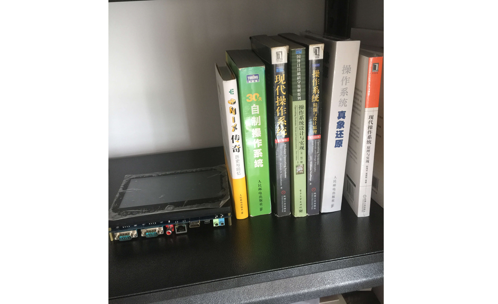

- 00 开篇词 为什么要学写一个操作系统？.md.html
- 00 编辑手记 升级认知，迭代自己的操作系统.md.html
- 01 程序的运行过程：从代码到机器运行.md.html
- 02 几行汇编几行C：实现一个最简单的内核.md.html
- 03 黑盒之中有什么：内核结构与设计.md.html
- 04 震撼的Linux全景图：业界成熟的内核架构长什么样？.md.html
- 05 CPU工作模式：执行程序的三种模式.md.html
- 06 虚幻与真实：程序中的地址如何转换？.md.html
- 07 Cache与内存：程序放在哪儿？.md.html
- 08 锁：并发操作中，解决数据同步的四种方法.md.html
- 09 瞧一瞧Linux：Linux的自旋锁和信号量如何实现？.md.html
- 10 设置工作模式与环境（上）：建立计算机.md.html
- 11 设置工作模式与环境（中）：建造二级引导器.md.html
- 12 设置工作模式与环境（下）：探查和收集信息.md.html
- 13 第一个C函数：如何实现板级初始化？.md.html
- 14 Linux初始化（上）：GRUB与vmlinuz的结构.md.html
- 15 Linux初始化（下）：从_start到第一个进程.md.html
- 16 划分土地（上）：如何划分与组织内存？.md.html
- 17 划分土地（中）：如何实现内存页面初始化？.md.html
- 18 划分土地（下）：如何实现内存页的分配与释放？.md.html
- 19 土地不能浪费：如何管理内存对象？.md.html
- 20 土地需求扩大与保障：如何表示虚拟内存？.md.html
- 21 土地需求扩大与保障：如何分配和释放虚拟内存？.md.html
- 22 瞧一瞧Linux：伙伴系统如何分配内存？.md.html
- 23 瞧一瞧Linux：SLAB如何分配内存？.md.html
- 24 活动的描述：到底什么是进程？.md.html
- 25 多个活动要安排（上）：多进程如何调度？.md.html
- 26 多个活动要安排（下）：如何实现进程的等待与唤醒机制？.md.html
- 27 瞧一瞧Linux：Linux如何实现进程与进程调度_.md.html
- 28 部门分类：如何表示设备类型与设备驱动？.md.html
- 29 部门建立：如何在内核中注册设备？.md.html
- 30 部门响应：设备如何处理内核I_O包？.md.html
- 31 瞧一瞧Linux：如何获取所有设备信息？.md.html
- 32 仓库结构：如何组织文件_.md.html
- 33 仓库划分：文件系统的格式化操作.md.html
- 34 仓库管理：如何实现文件的六大基本操作？.md.html
- 35 瞧一瞧Linux：虚拟文件系统如何管理文件？.md.html
- 36 从URL到网卡：如何全局观察网络数据流动？.md.html
- 37 从内核到应用：网络数据在内核中如何流转.md.html
- 38 从单排到团战：详解操作系统的宏观网络架构.md.html
- 39 瞧一瞧Linux：详解socket实现与网络编程接口.md.html
- 40 瞧一瞧Linux：详解socket的接口实现.md.html
- 41 服务接口：如何搭建沟通桥梁？.md.html
- 42 瞧一瞧Linux：如何实现系统API？.md.html
- 43 虚拟机内核：KVM是什么？.md.html
- 44 容器：如何理解容器的实现机制？.md.html
- 45 ARM新宠：苹果的M1芯片因何而快？.md.html
- 46 AArch64体系：ARM最新编程架构模型剖析.md.html
- LMOS来信：第二季课程带你“手撕”计算机基础.md.html
- 大咖助场 以无法为有法，以无限为有限.md.html
- 用户故事 yiyang：我的上机实验“爬坑指南”.md.html
- 用户故事 成为面向“知识库”的工程师.md.html
- 用户故事 技术人如何做选择，路才越走越宽？.md.html
- 用户故事 操作系统发烧友：看不懂？因为你没动手.md.html
- 用户故事 用好动态调试，助力课程学习.md.html
- 用户故事 艾同学：路虽远，行则将至.md.html
- 结束语 生活可以一地鸡毛，但操作系统却是心中的光.md.html
- 捐赠
用户故事 操作系统发烧友：看不懂？因为你没动手
你好，我是spring Xu。我平时的工作就是做实时嵌入式系统，坐标上海。
写操作系统这件事一直是我的兴趣，我之前写过引导器，也有移植过uboot的基础，还读了不少操作系统的书。作为一名操作系统“发烧友”，我是怎样跟操作系统、跟LMOS这门课程结缘的呢？请你听我慢慢道来。
我是怎样与操作系统结缘的？
其实我并非计算机专业出身，也没有系统地学过操作系统。不过出于兴趣，我早在大学时就自学了微机原理，当时记得还在x86实模式下写了些汇编程序，但还是有很多迷惑的地方。
于是，我跑到图书馆找了本Intel的芯片手册自己随意翻看，发现x86的保护模式寻址方式好奇怪，还有调用权限的知识也弄不太懂。后来我还试着询问老师，结果当时没得到什么满意的答案，这事儿也就不了了之了。
直到我工作了，接触的是嵌入式系统ucos-II。感觉这样的系统有点简单，因为它无法动态加载外部应用程序，还是想搞个更高级点的，自己写一个操作系统的想法从此埋下种子。
于是我购买了潘爱民老师的《程序员的自我修养》阅读。潘老师的那本书是讲C语言的编译链接和运行环境，也就是C语言文件如何编译、如何链接到生成程序的过程，还有该程序如何在操作系统上加载和运行以及程序加载的知识，都可以从这本书里学到。
我还根据于渊老师的《一个操作系统的实现》这本书，试着写了一个开机引导程序。这次再看到x86的保护模式，我觉得更容易看懂了，脑子里出现了一个念头，这是用硬件提供应用程序与操作系统内核之间的隔离。其实这并不是我的阅读理解水平有了多快的“飞升”，而是因为许多知识的领悟，都要经历大量的实践才会产生。

二级引导器的编写需要包含文件系统，还要有硬盘或者软盘的读取操作。工作一忙，时间久了自己也渐渐热情冷却，只是开了个头，就这样停工了。
但我的写操作系统梦想，并没有止步。后来偶然的机会，我看到周自恒老师翻译了一位日本人川合秀实写的《30天自制操作系统》。
- 哈哈，真正中我下怀！我心里盘算着，只要30天就可以写个操作系统出来了，那应该挺简单的。就按一个星期七天，我只读一天的内容，一年我也能完成我的操作系统了。就这样我又开始捣鼓自己的操作系统了。
这本书面对的读者算是小白，没有啥学术名词概念，用通俗的语言把许多知识都讲解了。而且按作者的工具和思路，我确实实现了一个带图形的系统，但我按照他的步骤，没觉得自己水平有啥提升，还是觉得有点不过瘾。
于是为了补充一下理论知识，我又买了好多操作系统的书，甚至入手了一块三星的s5pv210的ARM CPU的开发板，这次是想实现个3D界面效果的操作系统，像iOS的4.3风格的那种图形，选择这块开发板，是因为iPhone4的CPU还没有这个强大。这样，我的自制操作系统之路再次启动。
工作的忙碌让我只能停停走走，只把uboot移植了，可以点亮并可以在那块s700的屏幕上输出打印字符信息，并实现了一个没有2D加速的16位5:6:5格式，24位888格式的小型点阵图形库。但很遗憾，由于那个芯片的3d图形芯片是PowerVR，根本不可能有任何开放的资料指导我写出驱动它的程序，最多用CPU模拟3D功能，就这样实验再度搁置了。

现在回想起来，当时是对操作系统的图形界面感兴趣，而并不是操作系统本身的知识。关注点不一样，导致许多知识并没有进一步学习。
真正开始学习写操作系统
今年年初，我无意中看到了B站哈工大李治军老师的操作系统课程，这个课程是用Linux0.11作为实验代码，更具有实战性，于是我开始边刷课程边看代码，但进展十分缓慢。
直到五月份，在微信群中看到了极客时间有操作系统实战课程。想到写操作系统的难度大，一般不太容易自己写出操作系统，而且不光写操作系统还能教别人写，对这位作者有些钦佩。我又查了下这门课程的作者——彭东，再看开篇词里他自己学操作系统、写操作系统的故事，深深被他的这份执着精神所鼓舞。
想想自己每次都想着要写一个自己的操作系统，但真正到实施时就退缩了，直到现在我也没有实现，真是太惭愧了。于是我购买了课程，还加入了东哥的操作系统实战课程群。因为之前看书跟实操积累的基础，这门课程跟起来就更加顺畅了。所以我经常在交流群里催更，还提问过CPU多核方面的问题，也会经常在课程中留言。
如果你也跟我一样，也想自己动手写操作系统，我从一个写操作系统的爱好者角度，建议大家先学习CPU的体系结构知识，这个是在硬件上为操作系统所做的准备，比如内存的访问、中断以及异常的调用。
这个基础很有必要，目的是让你在没有模拟器的环境，又不能真机调试时，也有能力定位问题，还能锻炼如何用大脑模拟运行汇编代码。这里我顺便提一个问题，你感受下，如果写1个循环100次的代码，用累加1的操作，与用递减1的操作，哪个快？为什么？欢迎留言写出你的答案。
然后是C语言和编译链接方面的知识，这个是用来生成操作系统程序的。其他知识就是在实践中，根据自己情况主动探索、获取。这个课程的代码也可以拿来使用，也可以在这个代码上做二次开发。期待我们一起为这个Cosmos操作系统添砖加瓦！
这门课带给我的收获
跟着东哥学习操作系统，我感觉收获颇多，每一节课都有许多感悟，有一些我已经在课程留言区记录了，还有一些正在整理酝酿中。这里我就从整体课程出发，简单为你描述一下课程中操作系统的知识分布。
基础铺垫阶段
前两节课是热身阶段，这是为了带我们了解，从源代码文件到可运行的程序文件的编译链接过程，以及这个程序文件如何在PC上运行。这部分包含了C语言、编译、汇编还有链接的相关知识点，这也是现在许多程序员感到神秘和陌生的部分。
课程里的Hello OS实验，相当于一个PC硬件平台上的裸机程序（这里“裸机”二字我可能用得不太严谨）。现在的开发工具IDE，都把这部分工作自动化完成了。我觉得讲这些还是很有必要的，能让我们能清晰地了解程序生成过程，也能方便我们知道无调试环境下要如何看汇编代码。毕竟太依赖IDE的话，水平不会提高。
第三、第四节课对操作系统的宏内核与微内核架构做了介绍，也是Linus与Andrew Tanenbaum争论的话题。
第五到第九节课为后面Cosmos搭建铺垫了基础知识。硬件模块是对x86硬件编程的规范说明。CPU如何寻址访问内存的，也包括硬件上如何支持操作系统内核与应用程序的分级管理、x86的中断机制、cache的运行机制。
而硬件资源有限的情况下，不同程序访问同一资源，又涉及到后面各种锁的介绍。 通常操作系统课本上，这部分是放到进程中一并描述的知识点。而这里却单独拎出来，有助于我们关注本质。
初始化、内存管理与进程模块
之后第十节课开始，我们进入到启动初始化模块。一起探索真实开发环境的搭建与初始化。在二级引导器的帮助下，可以加载Cosmos的内核系统，最为直观的体会就是显示图片跟点阵字体。整个引导完成之后进入到操作系统核心，实现了各种资源的初始化过程（包括中断框架初始化）。
接着就到了最硬核的内存管理模块，这里的确有难度，一方面代码量不少，另一方面内存设计是老师自研，我们乍一看有点陌生。我现在也处于看懂了代码，但还需要进一步分析的阶段。所以也建议你对照课程讲解慢慢揣摩。
该模块老师用四节课讲物理内存管理，也就是操作系统下，内存管理中的物理内存分配管理。 这里的物理内存是指在硬件的地址空间中可以找到该数据的内存。而区别内存的前三节课，第十九节课是讲小于4k的内存分配是如何实现的。
之后四节课，两节课讲解了进程访问虚拟内存的相关知识。所谓的虚拟就是不真实的。为什么不真实呢？因为虚拟内存的大小，是由当前CPU最大可以访问的内存大小决定的，不是当前计算机安装的物理内存大小。
比如32位的CPU，虚拟内存大小是4G，但该计算机的内存配置1G，对于进程来说，还是会认为有4G的空间可以使用。
也正是这个原因，所以访问内存时，要把虚拟内存映射到真实的物理内存上，映射过程中CPU就会产生缺页中断异常，然后需要测试中断框架的代码，处理了该中断异常后，虚拟内存就可以访问到物理内存了。
之后两节课又讲了Linux的内存管理，关于Cosmos跟Linux的内存管理做对比，这里我也在摸索，等我理清楚了再分享出来。
因为之前看过不少图书，所以老师课程里进程模块的设计让我眼前一亮。因为进程的结构与调度，在各种操作系统的书里经常是讲得最复杂难懂的部分，一般课本上是把进程相关的都讲述一遍，每个知识点一次性都提及，我们不知道来龙去脉，就容易一头雾水。这不是劝退的思路么？
但这门课安排就巧妙得多，先讲内存管理再讲进程。程序的运行第一件事就是需要内存空间。有了这个基础，你再学习进程的时候也会觉得没那么难。
所以我从这两个模块学习中，得到的最大感悟就是，做什么事，把目标定好后，别考虑那么多，要设计多么的完美，而是把任务分解开，一点点来实现。
先实现一个雏形，知道会有问题，找出问题，解决问题。通俗点，哪怕起初挖了许多个坑也可以逐步完善，慢慢把坑填了，系统也就健壮了。
驱动模型、文件系统与网络
第二十八到三十课是Cosmos操作系统的驱动模型。由于操作系统是应用程序与硬件之间的桥梁。操作系统为简化应用程序开发难度，把硬件操作做了统一规划。
做驱动的开发只要根据操作系统提供的驱动模型，实现操作硬件的代码，这样就可以让应用程序调用操作系统提供的统一接口来操控不同的硬件了。课程里用的是定时中断的例子，如果想驱动键盘和鼠标的话，你可以重点看这个部分。
第三十二到三十四节课讲的是文件系统。这部分只是在内存上建立的文件系统。虽然简易，但也构建出了一个自己的文件系统。有能力的同学还可以写个磁盘驱动进行完善。
其实在等更新的时候，我也很好奇操作系统的网络模块要怎么讲。后来真的看了内容后发现，这部分其实是讲计算机网络与操作系统的关系。首先是传统单机中，计算机的网络是什么样的。 然后扩展到集群下的、超大宽带的计算机网络与操作系统的关系。
这里我整理了一张导图，整理了课程脉络。这里先说明一下，课程里还有不少关于Linux的内核的分析，这里为了凸显Cosmos主线我没有过多涉及Linux，如果你有兴趣可以试着自己动手总结归纳。
希望我对课程的内容梳理对你有帮助。操作系统里面包含的知识可以说是博大精深，真要完全掌握，需要大量的时间和精力的投入。
所以，我想结合我个人经验跟你聊一聊，我们怎么从自身工作技术栈中的底层技术点这个维度入手，深挖出与操作系统相关的知识点，通过对底层机制的思考学习，加深自己对技术的理解。
比如做Java开发，那自然深挖技术知识点，就会挖出JVM虚拟机的内存管理原理。 内存管理在操作系统中也有，但操作系统做成了谁申请、谁释放的原则，让应用程序自己来负责。
而JVM这个应用程序，它向操作系统申请了超大的堆内存作自己的虚拟机管理的内存，并根据对象的引用计数器来判断对象的生命周期是否结束，这样就可以自动回收垃圾对象所分配的内存了。对于操作系统来说，JVM仍然是占用着那块超大的堆内存的。
我们进一步思考下，如果把这部分机制放到内核中，是不是就可以做出带垃圾回收机制的C语言了呢？
这个思路其实是可以有的，但为了兼容考虑，解决思路是放到了编译阶段了。你可以了解一下Apple系统的object-c语言的ARC机制。这里你可以想想，为什么不能在Windows或者Linux、iOS上把这个功能实现了，只能从编译阶段做成这个样子？
再比如使用Golang做开发，你会发现协程其实是在Golang的运行环境里提供了协程和协程调度，协程调度器按照调度策略，把协程调度到线程中运行。协程的调度过程由用户态程序负责，也就是golang应用程序，由M个协程对应N个内核线程，这个调度算法比较复杂，但对于开发者来说是无感知的。这样带来的好处又是什么？当然协程不光Golang提供了。
再比如做前端Web开发。微信是一个IM的应用软件，但微信可以浏览网页、公众号，甚至加载小程序，小程序的开发语言是JavaScript，它的运行环境是JavaScript虚拟机。这个不是和多年前Palm公司推出的WebOS系统很像吗？
操作系统的桌面用浏览器来代替，不需要用C++或者Java语言来开发应用，直接用JavaScript语言就可以开发所谓的桌面应用程序了。如果用浏览器的插件技术，开发的语言是C++就会导致开发人员的学习成本升高，但性能是强劲的。
通过这三个例子，你有没有发现，跟原来的技术实现相比，开发应用的难度是在降低的。而现代新出的技术有不少是操作系统里做的一些功能，换到应用程序里提供的功能，又在编程语言上提供了语法糖（在编程语言中，增加新的关键字来简化原来的写法），再通过开发工具生成应用程序。
核心思想就是屏蔽复杂的知识，降低开发难度，开发人员不用太了解底层知识，就可以快速上手开发应用程序，让更多的开发者更关心所谓的业务开发。
如果只关心业务开发，你会发现今天出了一门语言，明天又出了一个框架，你感觉好像有学不完的知识。一直在学习，但感觉学不动了，要休息了。所以，我学习新技术，或者新框架，会先试着理解这个新技术是为了解决什么问题而产生的，原来的技术是否可以这样做，新技术与原技术在开发效率与运行效率上是不是有优势？
总之，我认为无论你是不是内核开发者，都有必要了解操作系统的相关知识。如果操作系统的知识你掌握了，就相当于掌握了内功心法，学习新的语言或者新的技术，只要看看官方的文档，就可以很快开始运用该技术做项目了。
学技术不动手，就好比游泳只看理论不下水。希望你也能认识到，动手去写代码、改代码很重要，让我们跟着LMOS，在操作系统的实践中不断精进！
© 2019 - 2023 Liangliang Lee. Powered by gin and hexo-theme-book.